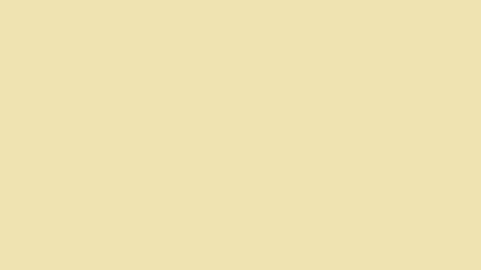

Teks ini adalah sebuah link ke suatu halaman dalam situs Web.
Teks ini adalah sebuah link ke halaman awal situs Google.
Anda dapat juga menggunakan gambar sebagai sebuah link: 
halaman BerikutnyaBila Anda memberikan atribut target sebuah link menjadi "_blank", Link terebut akan membuka sebuah window browser baru.
Ada tulisan disini (lakukan copy dan paste baris ini untuk baris berikutnya)
Ada tulisan disini
Ada tulisan disini
Ada tulisan disini